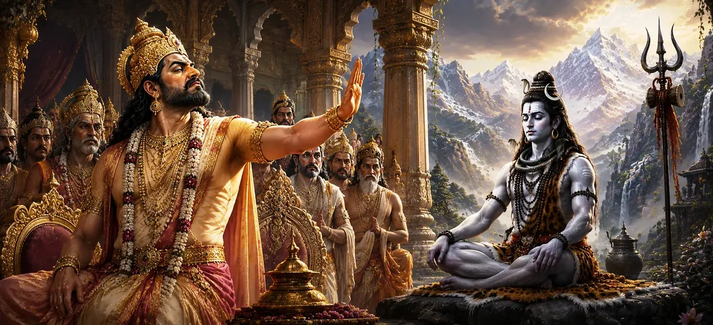

This chapter describes how Dakṣa Prajāpati's pride gradually transformed into hostility toward Lord Shiva. Despite Shiva’s supreme spiritual status and divine nature, Dakṣa judged Him through worldly standards and external appearances. His growing arrogance blinded him to the truth, setting the stage for future conflict and sorrow. The chapter teaches the dangers of pride and the importance of recognizing true spiritual greatness.
As one of the great Prajāpatis, Dakṣa held a position of honor and authority. Over time, however, he became increasingly attached to his status and accomplishments. This attachment gave rise to pride, causing him to value worldly prestige above spiritual wisdom.
Dakṣa could not comprehend Shiva’s transcendental nature. Seeing Shiva dressed in simple garments, covered with sacred ash, and dwelling in cremation grounds, he mistook these signs of renunciation for unworthiness. Unable to perceive Shiva’s divine essence, Dakṣa developed resentment toward Him.
Ego clouded Dakṣa’s judgment and prevented him from recognizing the truth. Rather than appreciating Shiva’s spiritual greatness, he focused on superficial differences. His pride made him believe that social rank and external appearances determined a person's worth.
Dakṣa’s hostility did not remain hidden within his heart. His negative feelings gradually influenced his actions and decisions, creating tension between himself and Lord Shiva. These growing divisions would eventually lead to one of the most significant events in the story of Sati.
Pride can blind individuals to truth and prevent spiritual growth.
True greatness is found in spiritual realization, not external appearances.
Humility enables seekers to recognize wisdom wherever it appears.
While Dakṣa sought honor and recognition, Shiva remained detached from worldly praise and criticism. This contrast highlights the difference between ego-driven ambition and spiritual freedom. Shiva’s greatness arose from inner realization, whereas Dakṣa became trapped by external achievements.
The story of Dakṣa serves as a timeless warning against arrogance and prejudice. Those who judge others based solely on appearances may fail to recognize profound spiritual truths. The chapter encourages devotees to cultivate humility, discernment, and respect for the Divine.
Dakṣa’s growing hatred toward Shiva reminds us that pride and ego can obscure even the clearest truths. Spiritual progress begins when we set aside prejudice and approach others with humility and openness. By honoring wisdom rather than appearances, we move closer to genuine understanding and divine grace.
While Dakṣa failed to recognize Shiva's greatness, sages, gods, and enlightened beings deeply revered Him. They understood that Shiva's simple appearance concealed infinite wisdom and supreme divinity. This contrast revealed that spiritual vision is required to perceive the true nature of the Divine.
Dakṣa's hatred toward Shiva was not merely a personal grievance; it marked the beginning of events that would profoundly affect Sati, Shiva, and the cosmic order. What began as pride and misunderstanding would eventually grow into a conflict with far-reaching consequences, demonstrating how unchecked ego can lead to suffering for many.
"Pride sees only appearances, but humility reveals the presence of the Divine."
Continue exploring the sacred events of Sati Khanda as Dakṣa's growing pride and hostility toward Lord Shiva lead to even greater events that will shape the destiny of gods, sages, and devotees alike.